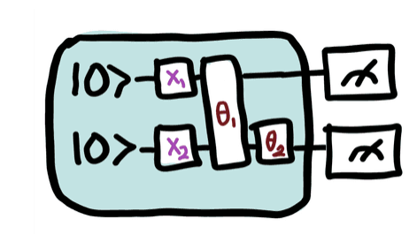
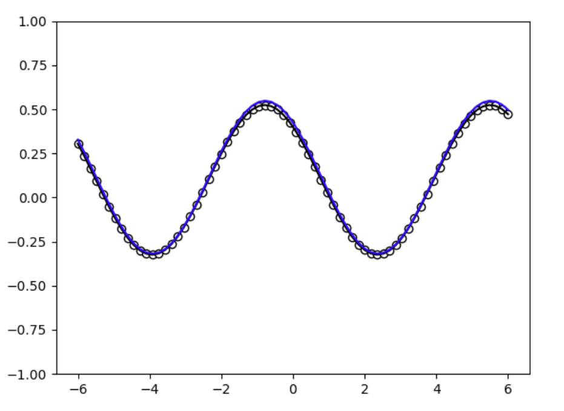

How I learned QML
so that you can too!
so that you can too!
Hello I am Meri. Two years ago I got interested in quantum machine learning and attempted to do a project on it
but as I was researching I realized how hard it was to find resources, especially as a beginner researcher.
I created this website to compile all the resources I found helpful during my research.
but as I was researching I realized how hard it was to find resources, especially as a beginner researcher.
I created this website to compile all the resources I found helpful during my research.
2025 - 2026 Variational Quantum Circuit(VQC)

2026 - current Using a Truncated Fourier Series to represent a VQC model
